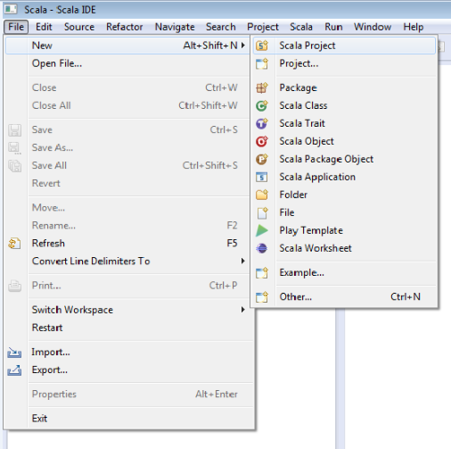
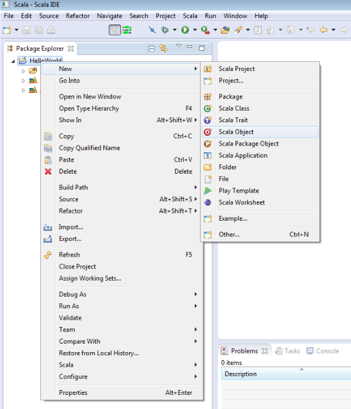

Download the Scala source code, from Scala's website
Unpack the tgz file using $ tar -zxvf scalaDistro
Add an environment variable with the Scala path directory $ export SCALA_HOME=/path/to/scala/distro
Add the Scala bin directory to your path with $ PATH=$PATH:$SCALA_HOME
Ensure that everything works by using $ scala -version
Get the Eclipse Scala IDE here
Check out the API here
Download the Scala source code, from Scala's website
Unpack the tgz file using $ tar -zxvf scalaDistro
Add an environment variable with the Scala path directory $ export SCALA_HOME=/path/to/scala/distro
Add the Scala bin directory to your path with $ PATH=$PATH:$SCALA_HOME
Ensure that everything works by using $ scala -version
Get the Eclipse Scala IDE here
Check out the API here
Download the Scala source code, from Scala's website
Realize that Windows is not good for development, reformat, download and install Ubuntu
Send an email thanking the creators of this website for showing you the awesomeness of Ubuntu then click here to see the install instructions for Ubuntu.
Now that you’ve downloaded the Scala IDE for Eclipse, run it and select File > New > Scala Project as shown below:
This should open the New Project Wizard. Enter “HelloWorld” into the project name field and click Finish.
Next, in the Package Explorer, right-click the project “HelloWorld” and select New > Scala Object:
Now, modify the auto-generated file to read as follows:
object HelloWorld {
def main(args: Array[String]) {
println("Hello, world!")
}
}
Finally, click the run button in the toolbar up top:
View the results of your program in the console output window at the bottom of the IDE. Congratulations, you’ve created your first Scala program!